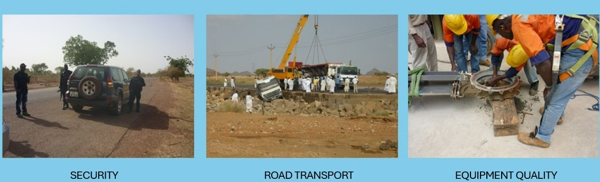
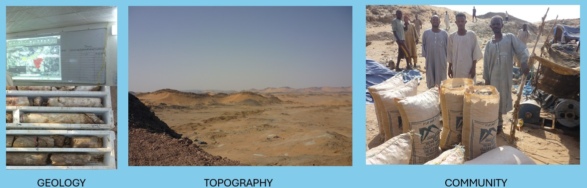
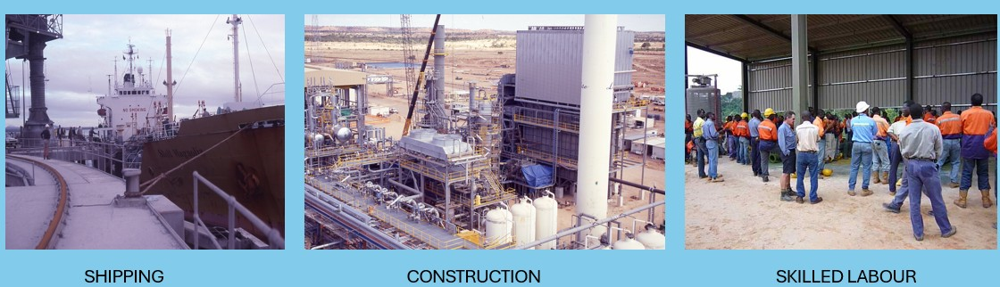
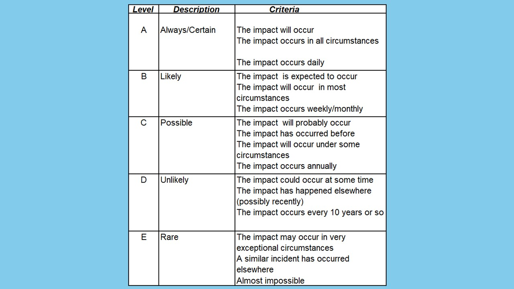
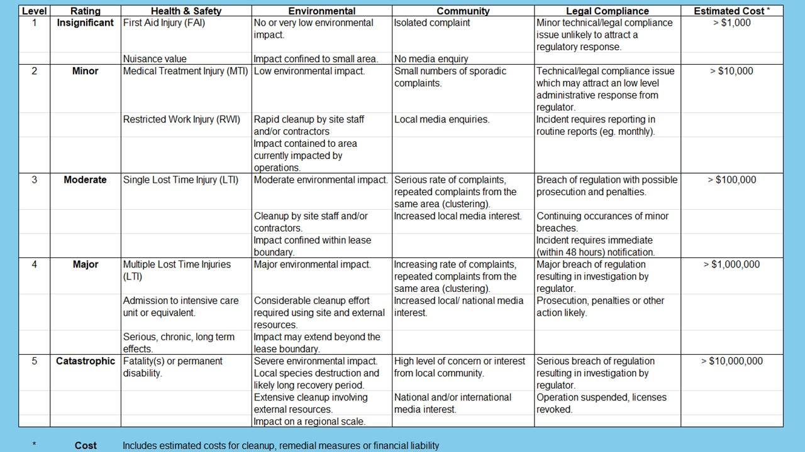
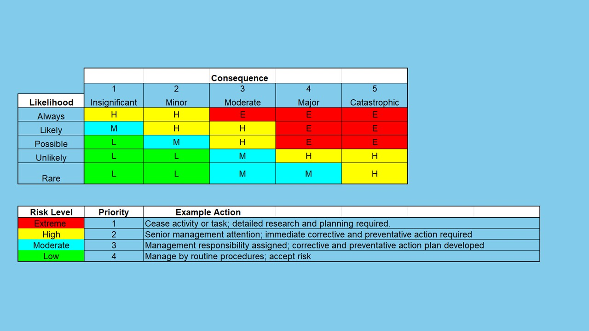

Project risk assessment differs from the other hazard and risk evaluations in this section in that, while safety hazards and risks are still important, the overall focus of project risk assessment is the identification of risks that might prevent success of a project. As a result the focus is much broader, incorporating all relevant risks to project success. The list of relevant risks is of course partly dependant on the type of project and the location of the project. Mining projects are a good example to consider as they are subject to a very wide range of potential risks. These will include, political, financial, financing, security, terrorism, armed conflict, corruption, sovereign stability, foreign ownership, taxation, royalties,

environmental, sustainability, community objection, construction labour availability, technical risk, inflation, scope changes, design errors, capital cost estimate errors, legal, ownership,

natural events (climate, topography, storms, geotechnical stability), schedule delays, equipment delivery, transport delays and logistics, equipment quality, performance guarantees, liquidated damages, to name only some.

Despite the broader range of risks, the risk assessment process is carried out in a similar manner to that of a Hazid or Hazop. The workshop is conducted by a group of people with strong familiarity with the key aspects of the project. The workshop is facilitated by an individual with experience in Project Risk Assessment and a background in the type and location of the project under consideration. The workshop is carried out with the use of a spreadsheet tool, a risk probability guide, a severity guide and a risk ranking matrix (which combines the probability and severity), and appropriate guide words to:



The advantage of a Project Risk Assessment is that: